舉辦期間限定活動「Saber Wars２ ～邁向初始的宇宙～」！
在從者生活的宇宙“蒼輝銀河”，奔走各個行星展開戰鬥！
本活動中將巡迴多顆行星，收集資源以進行故事。
向“蒼輝銀河”存在的星星冒險、見識故事的收尾吧！
另外，本活動中有2位新從者登場。
新期間限定從者「★5(SSR)太空・伊絲塔」「★4(SR)災星簡」會在同時舉辦的期間限定「Saber Wars２Pick Up召喚」Pick Up，敬請確認。
※本頁面皆為開發中圖片。會有與實際圖片相異的情況。 ※本活動沒有可靠進行主線關卡所獲得的從者。 ※一部份的關卡為日後開放。
◆活動舉辦期間◆
2019年10月30日(三) 17:0020:30～11月13日(三) 11:59
◆活動參加條件◆
滿足以下條件的御主才能參加
・通過「終局特異點」
※不需要通過亞種特異點(從Ⅰ到Ⅳ)及第2部序幕「序」以後的主線關卡。

在「Fate/Grand Order」官方網站內首頁及Gallery，公開了期間限定活動「Saber Wars２ ～邁向初始的宇宙～」的電視廣告。
敬請確認。
動畫製作：A-1 Pictures

※10月30日(三) 20:30圖片修正 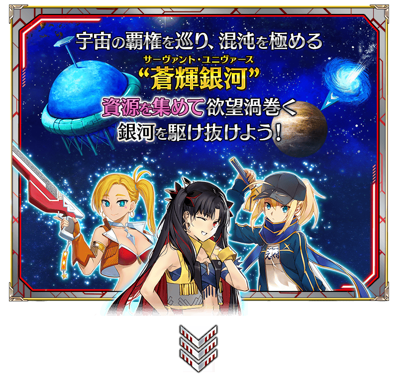 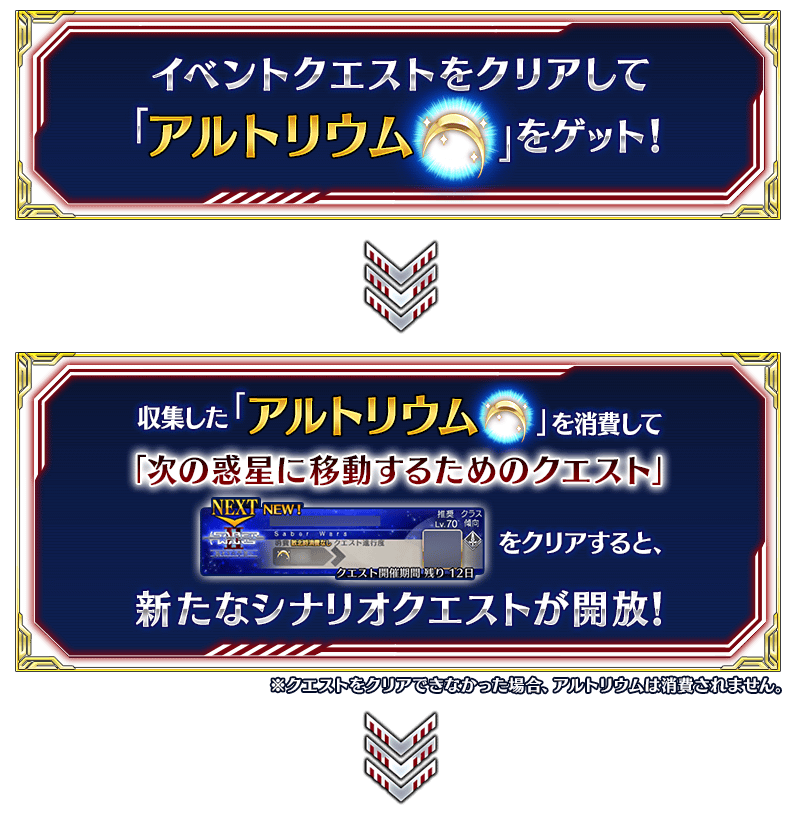 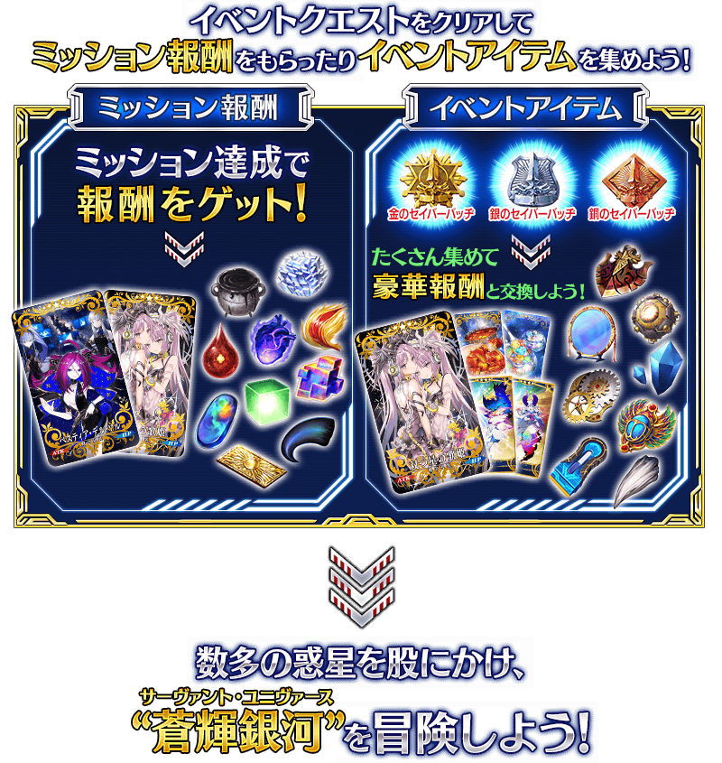

在活動道具交換入手「賞金首的通緝令」的話，會開放賞金首關卡地點。入手「賞金首的通緝令」，挑戰宇宙的無頼漢們吧！
另外，擊倒特定敵人的話，可獲得活動道具「女神經典」。入手「女神經典」的話，可開放女神經典關卡。
※「賞金首的通緝令」會在活動結束後的2019年11月13日(三) 11:59消失。 ※「女神經典」會在活動結束後的2019年11月13日(三) 11:59消失。
期間限定活動「Saber Wars２ ～邁向初始的宇宙～」中會發生達成「收集特定的道具一定數以上」「擊倒特定的敵人」等各式各樣條件的話，可獲得豪華報酬獲得的任務！
另外，對應任務的達成狀況會開放新的任務等。
攻略任務，邊獲得達成報酬邊推進主線關卡吧！
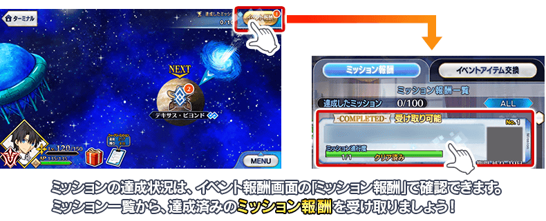
※請注意光滿足通過條件無法入手報酬。 ※請注意未領取任務報酬的話，不會開放新的任務等。

期間限定活動「Saber Wars２ ～邁向初始的宇宙～」限定新魔術禮裝「キャプテン・カルデア」登場！
通過特定主線關卡的話，可入手新魔術禮裝「キャプテン・カルデア」。
請務必得到期間限定的貴重魔術禮裝！
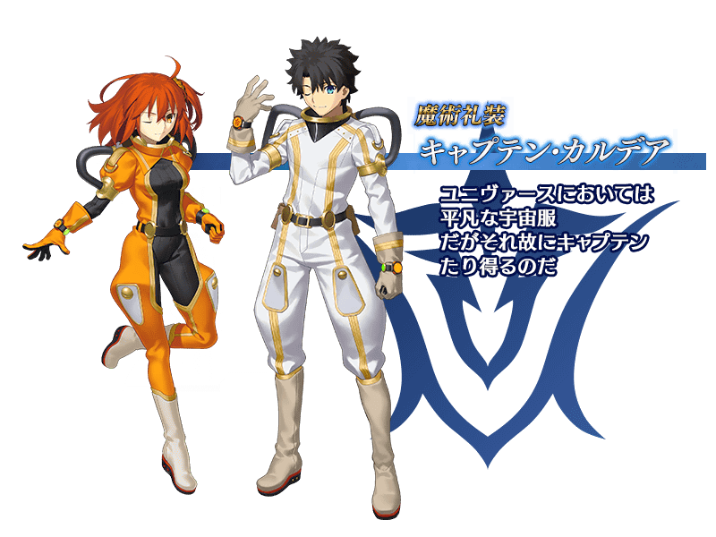
【10月30日(三) 20:30追記】
通過特定活動關卡的話，做為報酬會強化「★5(SSR)謎之女主角X(Assassin)」的一部份技能。
就算未持有「★5(SSR)謎之女主角X(Assassin)」或未召喚的情況，先通過本關卡後在入手時會是強化一部份技能的狀態。
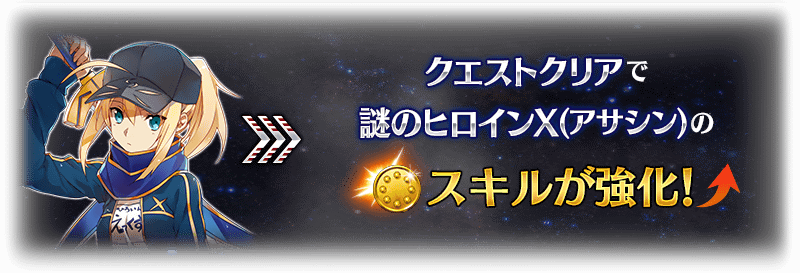
※強化「★5(SSR)謎之女主角X(Assassin)」一部份技能的關卡會在活動結束後追加到幕間物語。
【11月6日(三) 17:00追記】
以通過期間限定活動「Saber Wars２ ～邁向初始的宇宙へ～」所有任務的御主做為對象，高難易度的開放「挑戰關卡」。
「挑戰關卡」就算通過後也不會消失，能無數次挑戰，可以變更從者和概念禮裝的組合後再次挑戰。
※關卡通過報酬、戰利品、御主EXP、魔術禮裝EXP、絆點數只可在初次通過時獲得。
◆挑戰關卡開放時間◆
2019年11月6日(三) 17:00～
◆挑戰關卡參加條件◆
滿足以下條件的御主才能參加
・通過期間限定活動「Saber Wars２ ～邁向初始的宇宙～」的所有任務
◆挑戰關卡初次通過報酬◆
傳承結晶 1個

超值攻略方法・其1
本活動的期間中，下表的從者在活動關卡中會得到「自身的攻擊威力提升」與「絆點數獲得量提升」的加成。強化對象從者，挑戰活動吧！
※活動加成的效果量因從者而異。
※自10月26日(六) 17:30，在從者選擇畫面和從者強化畫面等，追加活動加成篩選器。
由於是只顯示於活動活躍從者的便利功能，敬請活用。
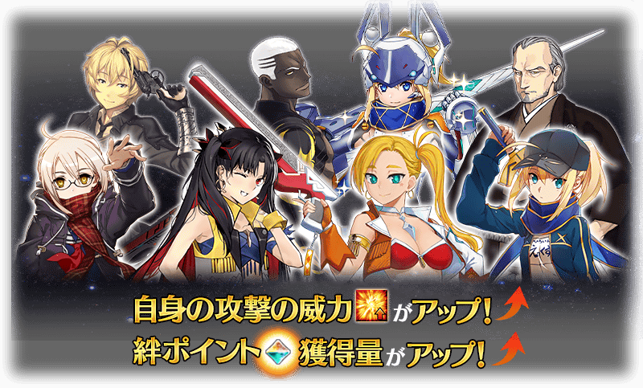
【活動加成的對象從者】
| 自身的 攻擊威力 |
絆點數 獲得量 |
職階 | 稀有度 | 從者名 |
|---|---|---|---|---|
| ＋100% | ＋50% | Archer | ★★★★ | 災星簡 |
| Assassin | ★★★★★ | 謎之女主角X | ||
| Avenger | ★★★★★ | 太空・伊絲塔 | ||
| ＋50% | ＋20% | Saber | ★★★★★ | 阿提拉 |
| ★★★★★ | 西格魯德 | |||
| ★★★★★ | 紅閻魔 | |||
| ★★★★ | 高文 | |||
| ★★★★ | 柳生但馬守宗矩 | |||
| Archer | ★★★★ | Emiya〔Alter〕 | ||
| ★★★ | 比利小子 | |||
| Lancer | ★★★ | 豹人 | ||
| Caster | ★★★★★ | 安娜塔西亞 | ||
| Berserker | ★★★★★ | 項羽 | ||
| ★★★★★ | 謎之女主角X〔Alter〕 | |||
| ★★★★ | 玉藻貓 | |||
| ★★★★ | 蘭斯洛特 | |||
| Alterego | ★★★★★ | 帝王花 | ||
| Foreigner | ★★★★ | 謎之女主角XX | ||
| ＋30% | ＋20% | Saber | ★★★★ | 阿爾托莉亞・潘德拉剛〔Lily〕 |
| ★★★★ | 伊莉莎白・巴托里〔Brave〕 | |||
| ★★★★ | 尼祿・克勞狄烏斯 | |||
| Archer | ★★★★★ | 伊絲塔 | ||
| ★★★★ | Emiya | |||
| Lancer | ★★★★★ | 艾蕾修卡 | ||
| ★★★★ | 伊莉莎白・巴托里 | |||
| Caster | ★★★★ | 伊莉莎白・巴托里〔萬聖節〕 | ||
| Assassin | ★★★★ | 沖田・J・總司 | ||
| Berserker | ★★★★★ | 土方歲三 |
※就算成為對象從者也會有在本活動的主線劇本未登場的情況。
超值攻略方法・其2
本活動的期間中，只限「★5(SSR)阿爾托莉亞・潘德拉剛(Saber)」在活動關卡在活動關卡中會得到活動道具「阿爾托莉元素」「掉落獲得數提升」的加成。
※請注意各關卡的道具掉落率並非100％。
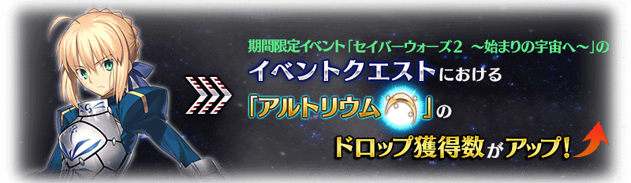
超值攻略方法・其3
裝備期間限定概念禮裝讓攻擊威力提升！
裝備可靠活動道具交換入手的活動限定概念禮裝「双つ星の歌姫」的話，會提升期間限定活動「Saber Wars２ ～邁向初始的宇宙～」的活動關卡中自身的攻擊威力。
另外，裝備可靠活動任務報酬入手的活動限定概念禮裝「ベスティア・デル・ソル」的話，會提升期間限定活動「Saber Wars２ ～邁向初始的宇宙～」的活動關卡中我方全體<含候補>的攻擊威力。
並且，裝備活動限定概念禮裝「双つ星の歌姫」及「ベスティア・デル・ソル」的話，會提升活動道具「阿爾托莉元素」的掉落獲得數。
※10月30日(三) 20:30圖片修正
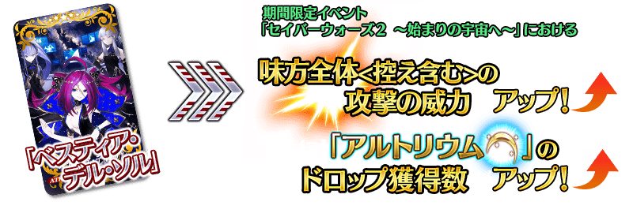
超值攻略方法・其4
裝備期間限定概念禮裝讓活動道具的掉落獲得數提升！
裝備在聖晶石召喚Pick Up的期間限定概念禮裝「プリンセス・オブ・アンコ」「プラネット・ロック」「文武一道」的話，會提升活動道具「金Saber徽章」「銀Saber徽章」「銅Saber徽章」各自的掉落獲得數。
※請注意各關卡的道具掉落率並非100％。


|
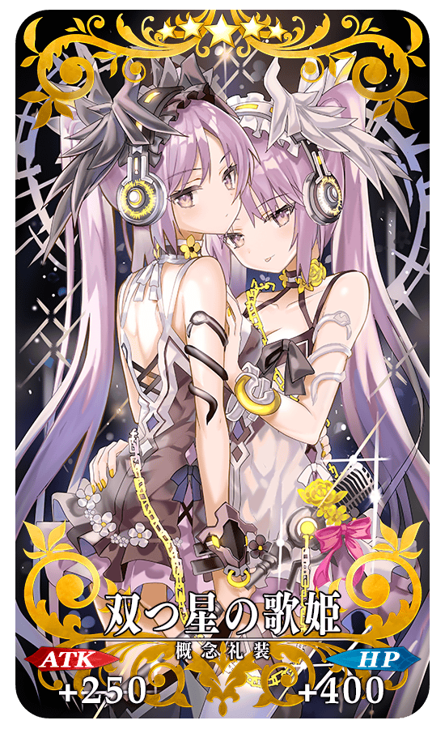
※10月30日(三) 20:30圖片修正 |
★★★★★SSR
|
| 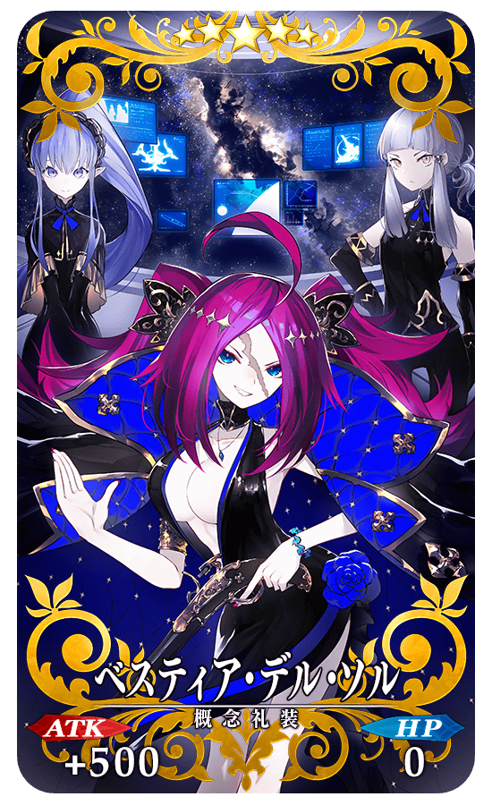 |
★★★★★SSR
|
◆得到活動限定概念禮裝EXP卡「はじめてのカレー」「謎の物質γ」吧！◆
做為任務的達成報酬，可入手能大幅強化概念禮裝的EXP卡！
請務必藉此機會，強化喜愛的概念禮裝！！

|
【活動限定】 |
| 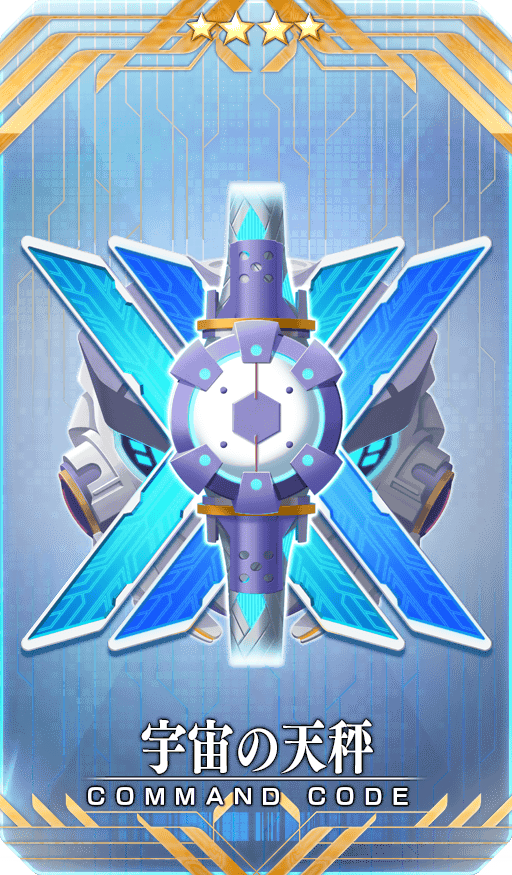 |
★★★★SR |
| 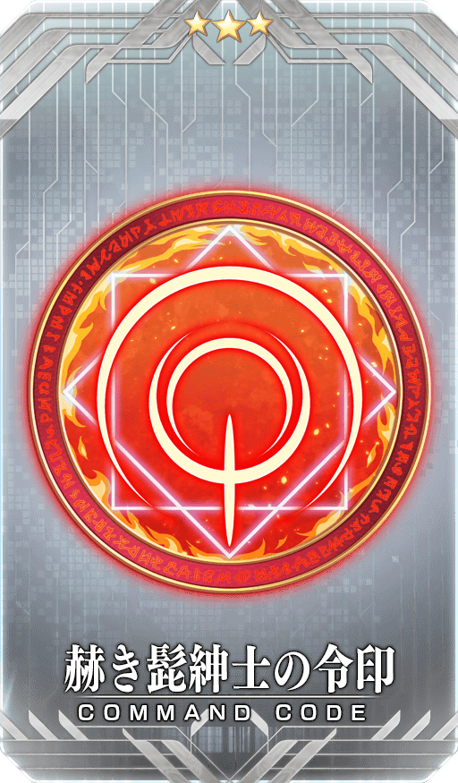 |
★★★R |

活動道具可自點擊管理室(ターミナル)畫面右上「活動報酬」的「活動道具交換」畫面，交換以下的道具。
※簡易靈衣「謎之女主角Z」開放權在通過本活動的主線關卡後才能交換。(10月30日(三) 20:30追記) ※關於英靈結晶・流星之芙芙ALL★4(HP)、英靈結晶・日輪之芙芙ALL★4(ATK)，在通過本活動的主線關卡後才能交換。 ※「阿爾托莉元素」在活動期間結束後可交換成QP。 ※活動道具交換期間結束後「金Saber徽章」「銀Saber徽章」「銅Saber徽章」「阿爾托莉元素」會消失。 ※「賞金首的通緝令」會在活動結束後的2019年11月13日(三) 11:59消失。
◆交換期間◆
2019年10月30日(三) 17:0020:30～11月20日(三) 11:59
◆能用金Saber徽章交換的道具◆
 |
【活動限定概念禮裝】
【靈衣開放權】
【技能強化＆靈基再臨素材】
【靈基再臨素材】
【其他道具】 |
◆能用銀Saber徽章交換的道具◆
| 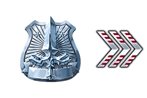 |
【活動限定概念禮裝】
【技能強化＆靈基再臨素材】
【靈基再臨素材】
【其他道具】 |
◆能用銅Saber徽章交換的道具◆
 |
【活動限定概念禮裝】
【技能強化＆靈基再臨素材】
【其他道具】 |
◆能用阿爾托莉元素交換的道具◆
|
【活動關鍵道具】
【其他道具】 |
【10月30日(三) 20:30追記】
做為期間限定活動「Saber Wars２ ～邁向初始的宇宙～」的報酬，「★5(SSR)謎之女主角X(Assassin)」的靈衣開放權登場！
可入手上述靈衣開放權做為活動道具交換的報酬。
另外，想要靈衣開放的話，除了靈衣開放權外必須再加上一些開放條件。
◆有關靈衣開放權的注意◆
※本次追加的「★5(SSR)謎之女主角X(Assassin)」的靈衣是只有外觀的變化，語音沒變化的「簡易靈衣」。
※「★5(SSR)謎之女主角X(Assassin)」的靈衣開放權，只限期間限定活動「Saber Wars２ ～邁向初始的宇宙～」的活動舉辦期間才能入手。
※請注意未持有「★5(SSR)謎之女主角X(Assassin)」的情況，可入手靈衣開放權。但無法進行靈衣開放。

※「靈衣開放」後會自動切換戰鬥角色和圖示。若想回到「靈衣開放」前的狀態和變成其他再臨階段的情況，可自從者詳細畫面變更。 ※語音與「靈衣開放」前的狀態相同。 ※透過「靈衣開放」只變更從者的外觀，職階和數值沒有變化。

「靈衣開放」是自強化畫面進行。
【10月30日(三) 20:30追記】
介紹開放簡易靈衣「謎之女主角Z」「★5(SSR)謎之女主角X(Assassin)」的寶具演出！
在「Fate/Grand Order」官方網站內的公告中，以影片公開寶具演出，敬請確認。
在2019年10月30日(三)遊戲更新後反映的更新內容之中，介紹代表性的內容。
◆追加時間◆
2019年10月30日(三) 17:0020:30～
在區域地圖的地點名顯示標示有自由關卡的圖示
在該地點存在自由關卡的情況，變得會在地點名顯示標示有自由關卡的圖示。
圖示的顯示會依自由關卡的通過狀況顯示。
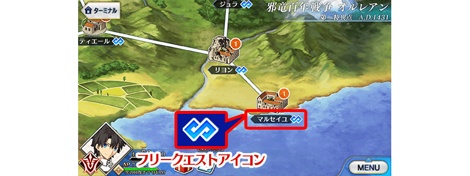
修改御主裝備畫面中魔術禮裝選擇方法
在御主装備畫面變得會顯示持有的魔術禮裝一覧。
點擊畫面下方圖示的話可切換裝備的魔術禮裝。
另外，持有超過顯示數魔術禮裝的情況拖曳圖示滾動的話，變得可查找想裝備的魔術禮裝。
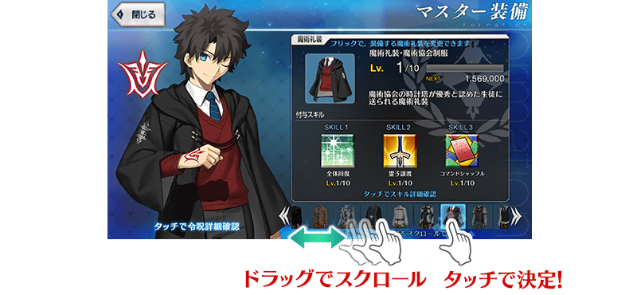
御主任務畫面中修改成更好了解能交換的聖晶石數
御主任務畫面中，變得更好了解可從持有聖晶片交換的「聖晶石數」。
此時，按鍵的名稱會從「道具交換」變更為「聖晶片交換」。
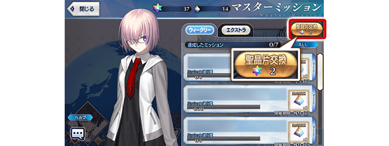
好友&跟隨的上鎖功能追加
追加可上鎖不會誤解除好友、跟隨的功能。
切換成「一起上鎖」點擊好友或跟隨的話，可上鎖點擊的好友或跟隨。
於「詳細確認」與目前同樣地能確認好友或跟隨的從者與概念禮裝詳情。
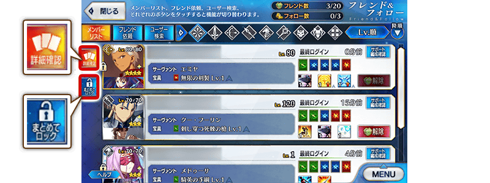
在管理室(ターミナル)畫面及地圖畫面中點擊令咒圖示時變更成會跳出令咒視窗
管理室(ターミナル)、區域地圖畫面中，在點擊畫面左下的令咒圖示時變更成會顯示令咒視窗。
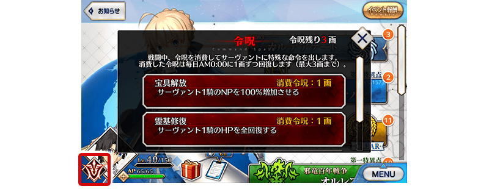
其他還有，期間限定「Saber Wars２Pick Up召喚」同時舉辦！
關於詳情，請自下述橫幅確認。
■「Saber Wars２Pick Up召喚」詳細情報